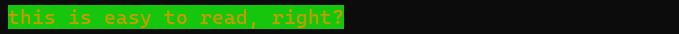
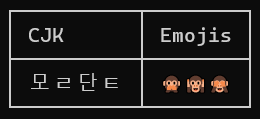
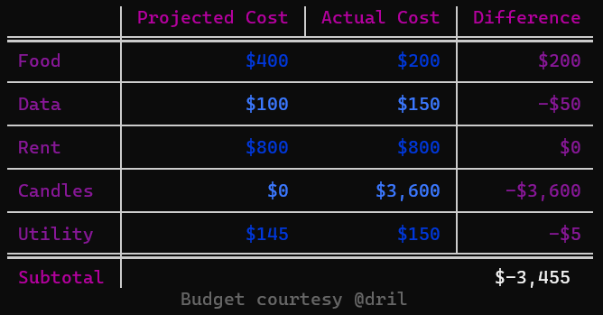

Mordant
Colorful styling for command-line applications
/mɔː(ɹ)dənt/ A substance used to set (i.e. bind) colored dyes on fabrics 1
Mordant has:
- Easy colorful ANSI output with automatic detection of terminal capabilities
- Markdown rendering directly to the terminal
- Widgets for laying out terminal output, including lists, tables, panels, and more
- Support for animating any widget, like progress bars and dashboards
Usage¶
Create a Terminal instance, and import any enum entries you want from TextColors and
TextStyles. The println function on your Terminal will detect your current terminal
capabilities and automatically downsample ANSI codes if necessary.
import com.github.ajalt.mordant.rendering.TextColors.*
import com.github.ajalt.mordant.rendering.TextStyles.*
val t = Terminal()
t.println(red("This text will be red on terminals that support color"))

Multiple styles¶
import com.github.ajalt.mordant.rendering.TextColors.*
val t = Terminal()
t.println("${red("red")} ${white("white")} and ${blue("blue")}")

Foreground and background colors¶
t.println((yellow on brightGreen)("this is easy to read, right?"))

Background color alone¶
t.println("The foreground ${brightBlue.bg("color will stay the")} same")

Combine styles and colors¶
val style = (bold + white + underline)
t.println(style("You can save styles"))
t.println(style("to reuse"))

Nest styles and colors¶
t.println(white("You ${(blue on yellow)("can ${(black + strikethrough)("nest")} styles")} arbitrarily"))
True color and other color spaces¶
import com.github.ajalt.mordant.rendering.TextColors.Companion.rgb
t.println(rgb("#b4eeb4")("This will get downsampled on terminals that don't support truecolor"))

Terminal color support detection¶
By default, Terminal() will try to detect ANSI support in the current stdout stream. If you’d
like to override the detection, you can pass a specific value to the Terminal constructor.
For example, to always output ANSI RGB color codes, even if stdout is currently directed to a file, you can do this:
Terminal(AnsiLevel.TRUECOLOR)
Tables¶
Use the table DSL to quickly create tables. Mordant handles ANSI styles and wide characters like
CJK and emoji.
val t = Terminal()
t.println(table {
header { row("CJK", "Emojis") }
body { row("모ㄹ단ㅌ", "🙊🙉🙈") }
})

Mordant gives you lots of customization for your tables, including striped row styles, row and column spans, and different border styles.
table {
borderStyle = SQUARE_DOUBLE_SECTION_SEPARATOR
align = RIGHT
outerBorder = false
column(0) {
align = LEFT
borders = ALL
style = magenta
}
column(3) {
borders = ALL
style = magenta
}
header {
style(magenta, bold = true)
row("", "Projected Cost", "Actual Cost", "Difference")
}
body {
rowStyles(blue, brightBlue)
borders = TOM_BOTTOM
row("Food", "$400", "$200", "$200")
row("Data", "$100", "$150", "-$50")
row("Rent", "$800", "$800", "$0")
row("Candles", "$0", "$3,600", "-$3,600")
row("Utility", "$145", "$150", "-$5")
}
footer {
style(bold = true)
row {
cell("Subtotal")
cell("$-3,455") { columnSpan = 3 }
}
}
captionBottom("Budget courtesy @dril", TextStyle(dim = true))
}

Layout¶
If you need to lay out multiple widgets or strings, you can use the grid builder, which has an API similar to table,
but doesn’t apply styling by default. There are also the horizontalLayout and verticalLayout builders if you don’t
need a full grid.
Markdown¶
Mordant can render GitHub Flavored Markdown. Hyperlinks will even be clickable if you’re on a terminal that supports it, like recent versions of iTerm or Windows Terminal.
val t = Terminal()
t.print(Markdown(Path("README.md").readText()))

Controlling the cursor¶
You can show and hide the cursor, move it around, and clear parts of the screen with the cursor
property on Terminal. If your terminal doesn’t support cursor movements (like when output is
redirected to a file) these commands are no-ops.
val t = Terminal()
t.cursor.move {
up(3)
startOfLine()
clearScreenAfterCursor()
}
t.cursor.hide(showOnExit = true)
Animations¶
You can animate any widget like a table with Terminal.animation, or any regular
string with Terminal.textAnimation.
val t = Terminal()
val a = t.textAnimation<Int> { frame ->
(1..50).joinToString("") {
val hue = (frame + it) * 3 % 360
TextColors.hsv(hue, 1, 1)("━")
}
}
t.cursor.hide(showOnExit = true)
repeat(120) {
a.update(it)
Thread.sleep(25)
}

Progress bars¶
You can create customizable progress bars that automatically compute speed and time remaining.
val t = Terminal()
val progress = t.progressAnimation {
text("my-file.iso")
percentage()
progressBar()
completed()
speed("B/s")
timeRemaining()
}
The progressAnimation builder is currently JVM-only. On other platforms, you can still use
t.animation { progressLayout { ... } } which will render the same widget, you’ll just need to call progress.update
manually.

Call progress.start to animate the progress, and progress.update or progress.advance as your
task completes.
Prompting for input¶
You can ask the user to enter text and wait for a response with Terminal.prompt:
val t = Terminal()
val response = t.prompt("Choose a size", choices=listOf("small", "large"))
t.println("You chose: $response")
$ ./example
Choose a size [small, large]: small
You chose: small
You can customize the prompt behavior further or convert the response to other types
creating a subclass of the Prompt class. Mordant includes StringPrompt, YesNoPrompt, and
ConfirmationPrompt classes for common use cases.
Installation¶
Mordant is distributed through Maven Central.
dependencies {
implementation("com.github.ajalt.mordant:mordant:2.1.0")
}
If you’re using Maven instead of Gradle, use <artifactId>mordant-jvm</artifactId>¶
Snapshots¶
Snapshot builds are also available

You'll need to add the Sonatype snapshots repository:
repositories {
maven {
url = uri("https://oss.sonatype.org/content/repositories/snapshots/")
}
}